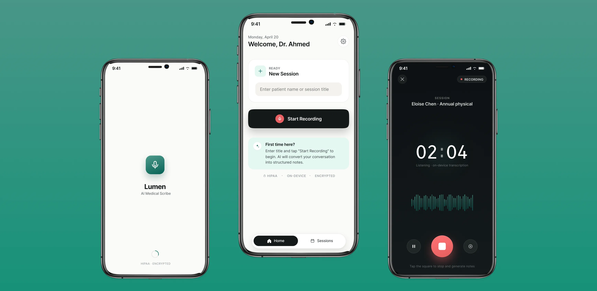
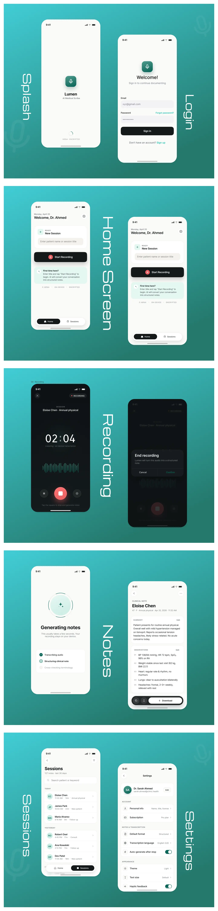

AI Medical Scribe
Rethinking Clinical Documentation Through AI
-
Role:
-
UX/UI Design
-
Category:
-
Healthcare AI
-
Timeline:
-
Case Study
-
Tools Used:
-
Figma
Role: UX/UI Design
Category: Healthcare AI
Timeline: Case Study
Tools Used: Figma
Overview
The AI Medical Scribe explores how clinical documentation can happen quietly in the background instead of interrupting patient care.
The focus was not just generating notes with AI, but designing an experience that feels fast, reliable, and natural inside a doctor’s existing workflow.
The Problem Isn’t Documentation — It’s Time
A typical doctor sees 20 to 30 patients a day. Between consultations, they are expected to document symptoms, observations, and recommendations with accuracy.
Documentation isn’t just time-consuming. It breaks attention, slows momentum, and forces doctors into a tradeoff between patient focus and record quality.
- Giving full attention to patients
- Ensuring accurate documentation
- Managing both under continuous time pressure
A Simple Question
What if doctors never had to write notes again?
That question shaped the project. What if documentation could happen during the conversation, without asking the doctor to stop, switch context, or interact with a complex system?
The Goal
Design a system that removes manual note-taking and fits naturally into a fast-paced clinical environment.
- Eliminates manual note-taking
- Captures conversations effortlessly
- Converts them into structured clinical notes
- Fits naturally into a doctor’s workflow
Understanding the Workflow
Before designing screens, I focused on how doctors actually move through their day. They do not want feature-heavy tools. They want something dependable that disappears into the job.
The product direction came from a simple reality: if the system adds effort, it will not survive in a clinical setting.
Key Insights- Every extra step creates friction
- Interfaces must feel invisible, not overwhelming
- Information must be scannable within seconds
Meet Dr. Ahmed
Dr. Ahmed is a general physician handling a high patient load every day. Diagnosis is not the difficult part. The friction appears immediately after the consultation.
- Writing notes between patients
- Remembering key details after the conversation ends
- Managing time without delays stacking up
For him, saving even two or three minutes per patient meaningfully changes the day.
Designing for Speed, Not Features
Instead of adding more functionality, the experience was designed around removing friction. The core principle was simple:
Start fast. Finish faster.
Experience Flow
The journey was reduced to a lightweight sequence that keeps the doctor focused on the patient while AI works in the background.
- Start recording instantly
- Let the consultation flow naturally
- End recording with one clear action
- Review structured notes after AI processing

No complexity. No learning curve. Just flow.
From Chaos to Clarity
Raw conversations are messy, but clinical documentation needs to be structured, readable, and medically useful. The challenge was translating unstructured voice data into clear notes that still feel familiar to doctors.
Designing the Interface
The interface had to disappear instead of demanding attention. Rather than designing isolated screens, I focused on designing moments of interaction.
Design Principles- Minimal and distraction-free
- Large, clear actions
- Strong hierarchy for readability
- Clean spacing for fast scanning
- Home: one clear action to start recording
- Recording: focused and distraction-free
- Notes: structured, scannable, editable
- History: quick access to past records

Turning AI into a Usable Experience
AI is only valuable if the output is understandable. Instead of exposing raw generated text, the notes were organized into clear sections doctors already recognize.
- Summary
- Observations
- Recommendations
This made the output feel familiar, professional, and immediately usable.
Key Design Decisions
Every decision was intentional:
- Minimal UI → reduces cognitive load
- One-tap actions → saves time
- Structured notes → improves clarity
- Clear hierarchy → enables fast scanning
Challenges Along the Way
Healthcare products need to feel trustworthy. The design challenge was not just simplifying the experience, but making AI output feel dependable in a high-responsibility context.
- Simplifying complex medical data
- Making AI output feel reliable
- Balancing speed with accuracy
Impact
This solution reimagines how documentation fits into a doctor’s workflow by shifting it into the background instead of making it the doctor’s next task.
- Less time spent writing
- More focus on patients
- Better structured records
- Smoother overall experience
What I Learned
Good design is not about adding more. It is about removing friction.
- Simplicity matters most in high-pressure environments
- Speed strongly shapes user satisfaction
- Real-world problems create the most meaningful design work
Final Thoughts
The AI Medical Scribe is more than a documentation tool. It represents a shift in how clinical note-taking can be approached when AI is designed to support the workflow instead of interrupt it.
By moving documentation into the background, doctors can focus on what truly matters:
The Patient